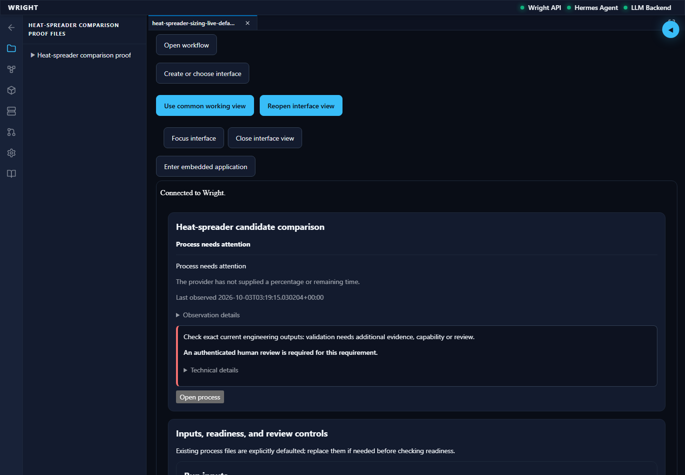
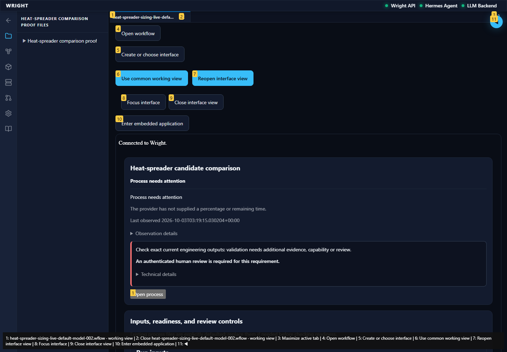
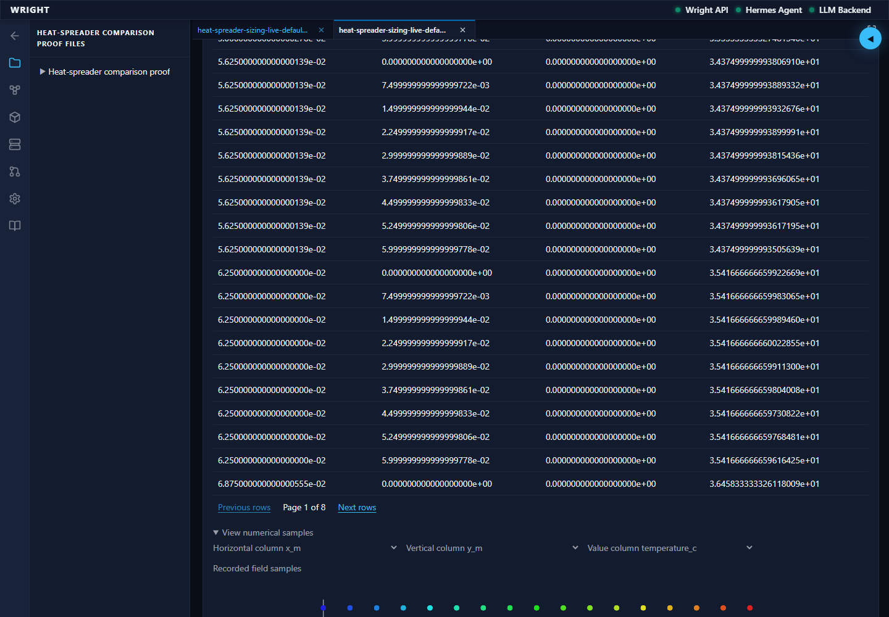
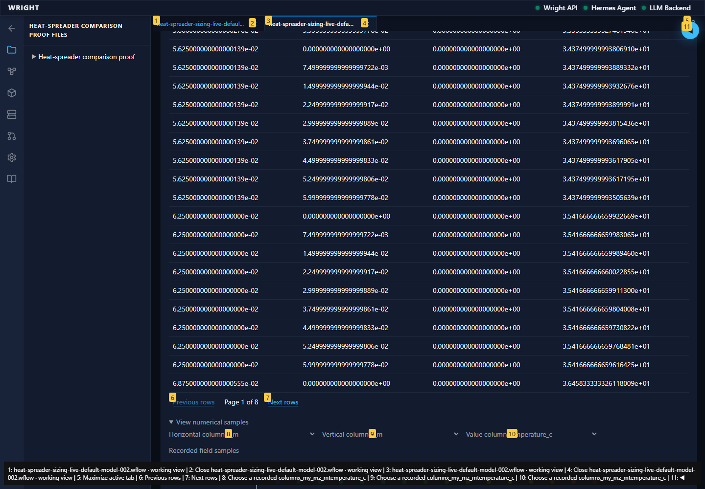
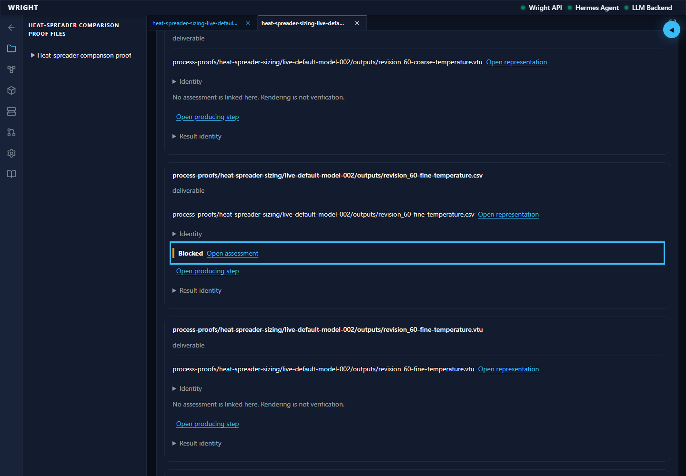
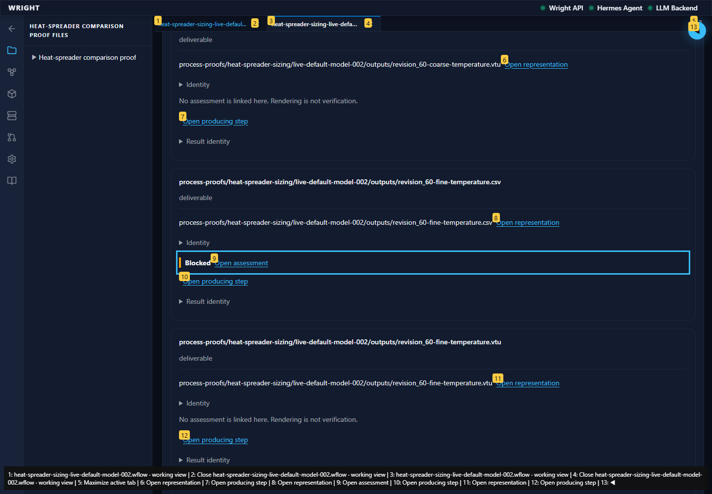
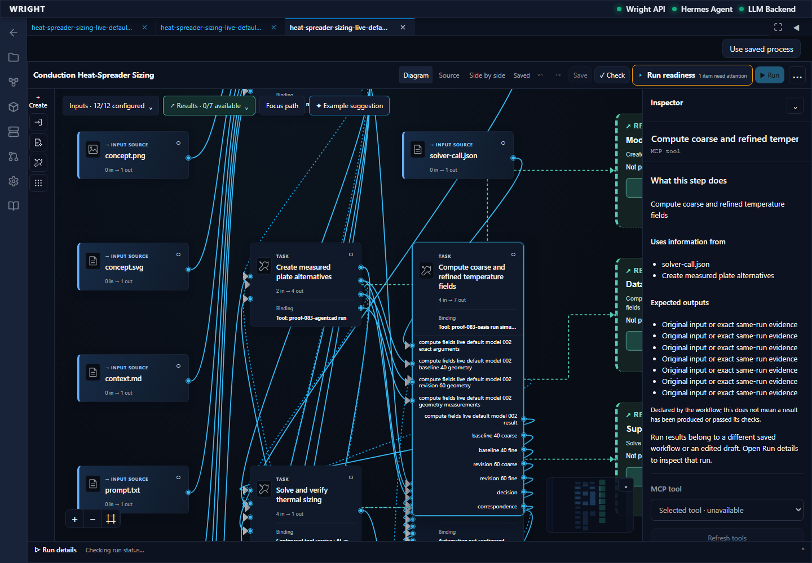
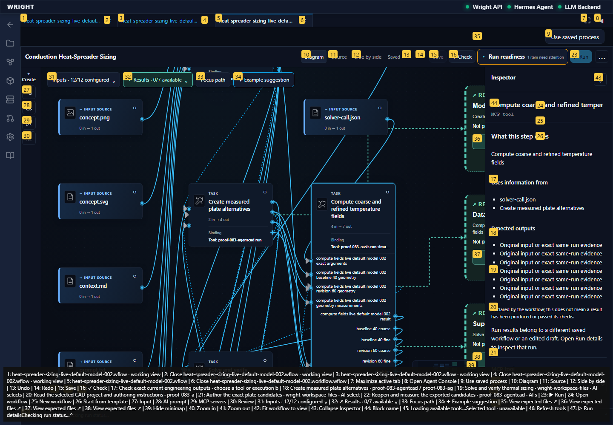
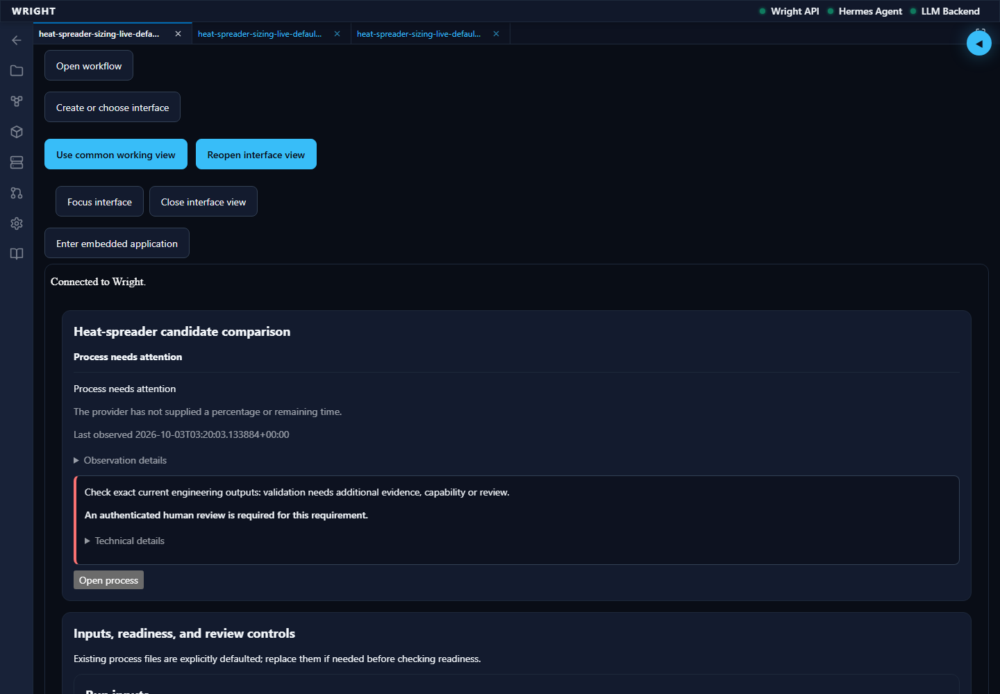
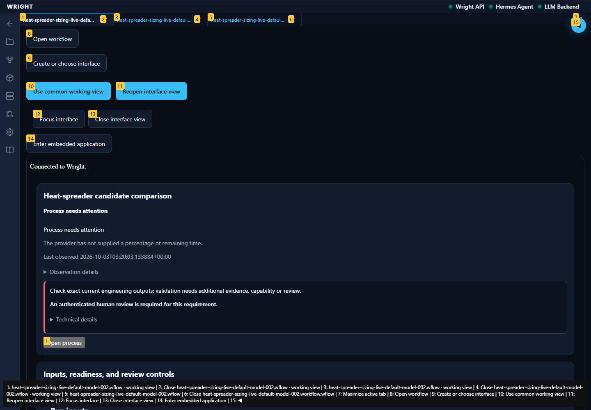

A focused continuation of the verified normal-workspace journey using actual completed CAD/solver outputs. No process decision or physical action.
Status: pass
The saved shared-controls interface reads all eighteen actual CAD/solver results.
Expected: Exact eighteen-result parity and original held assessment in a working context.
Actual: All eighteen identities match; exact working context and shared controls are present.
raw 
annotated 
The latest interface opens all 765 supplied solver samples in the common evidence view.
Expected: Exact common result parity and all 765 real supplied samples.
Actual: Eighteen exact common results and all fine-grid samples rendered; no interpolation or engineering approval.
raw 
annotated 
The interface opens the original assessment with twenty-five passes and one required-review hold.
Expected: Original held assessment and exact fine-result focus.
Actual: Twenty-five passes, one blocked review and exact fine-result focus retained.
raw 
annotated 
The comparison returns to its actual computation producer and inspector.
Expected: The exact accepted computation block selected.
Actual: Exact computation block and inspector selected; no stale-source warning.
raw 
annotated 
Reload restores the same saved revision and all actual completed outputs.
Expected: Same exact saved UI and eighteen engineering results.
Actual: Current saved working revision and all exact results restored; review remains held.
raw 
annotated 